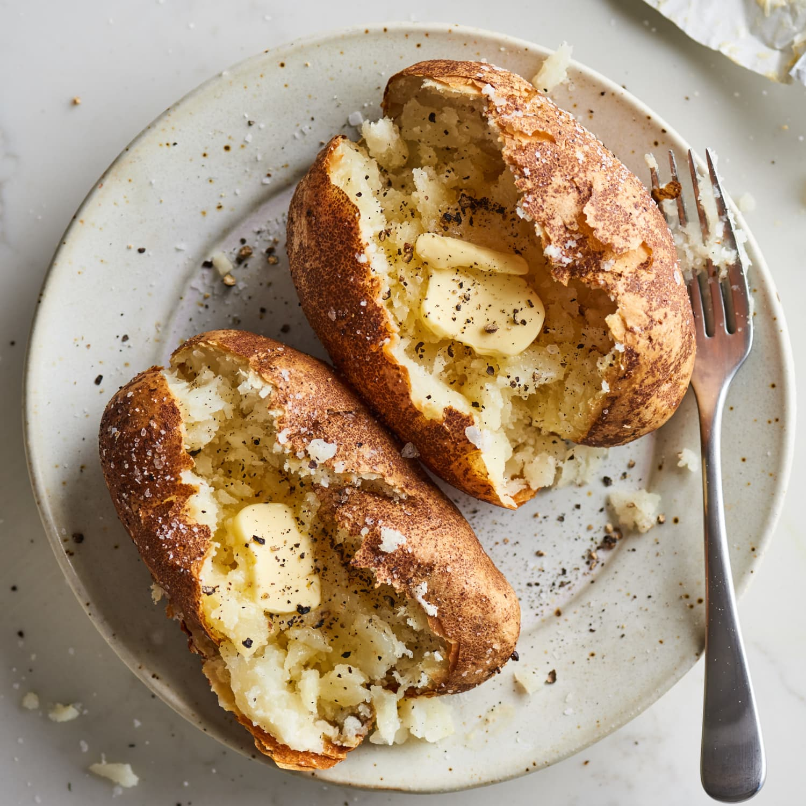
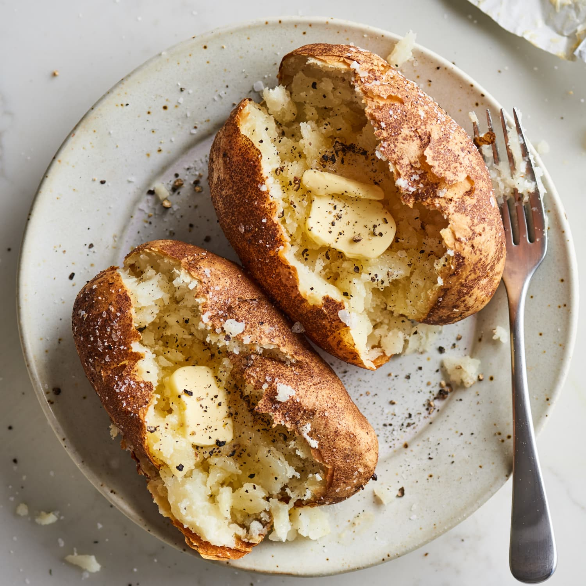

Description
This Baked Potato Recipe takes just 5 minutes to prep and is made with four ingredients!
The result is baked potatoes that are soft and fluffy in the middle with a perfectly crispy exterior.
Serve them as a side dish topped with butter or loaded with all your favorite toppings!
The thing i love about baked potatos is that they are so versatile. You can top them
with anything.... ANYTHING!. The possibilities are endless.
Ingredients
The things you will need to make these fluffy and soft potatoes are:
- 6 small-medium russet potatoes. Roughly the same sized.
- ¼ cup or 50ml canola oil
- 1 teaspoon salt
- ¼ teaspoon black pepper
- Any topping of your choice (butter,sour cream,spices etc)
Steps
- Preheat your oven to 375 degrees fahrenheit or 190 degrees celcius.
- Wash your potatoes thoroughly. Pierce all around the potatoes with a fork.
- Rub each potatoes with equal amounts of the oil. (2 tbsp each)
- Bake on a baking sheet or rack for 1 hour, or until tender.
- Take them out and brush them with remaining oil and season with salt and pepper.
- Increase the temp to 425 degrees fahrenheit (218 degrees celcius). If your oven does'nt go to 425 then
set it to the highest temperature.
- Bake for another 10-15 min or until crispy.
- Serve fresh with your favourite toppings and side dishes.
 
